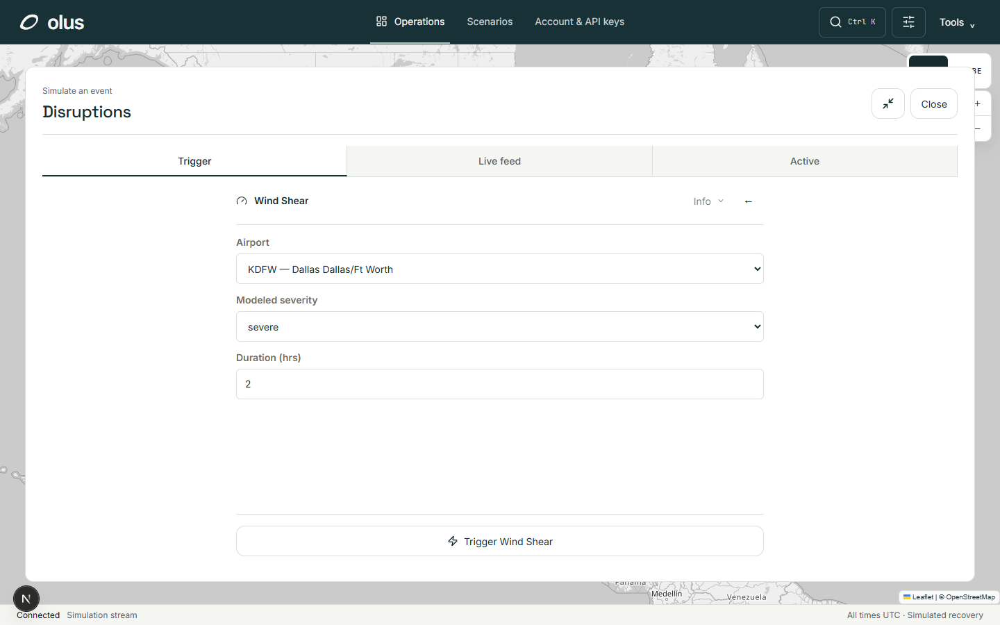
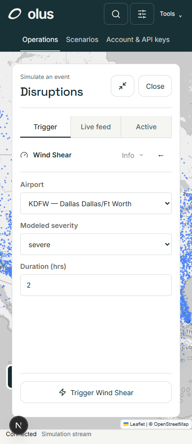
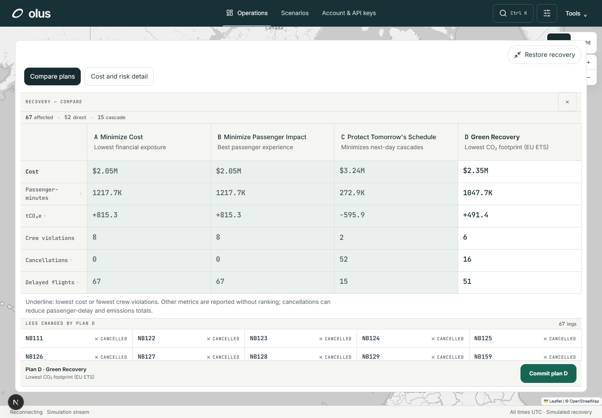
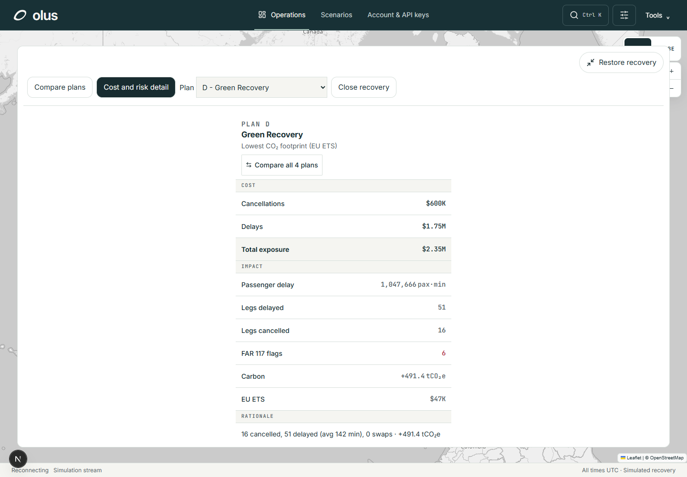
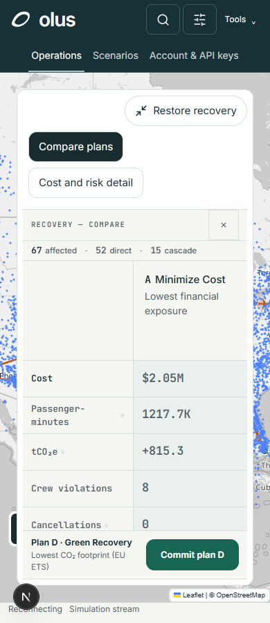
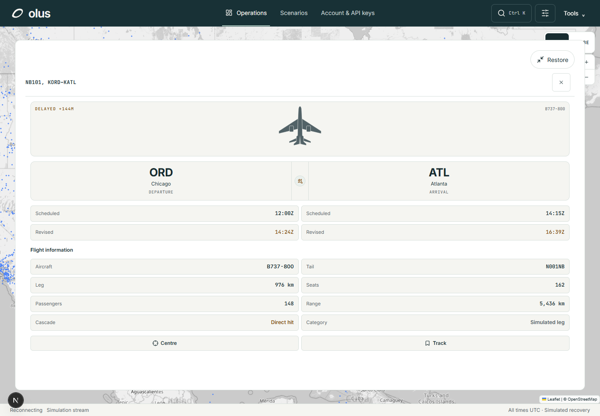
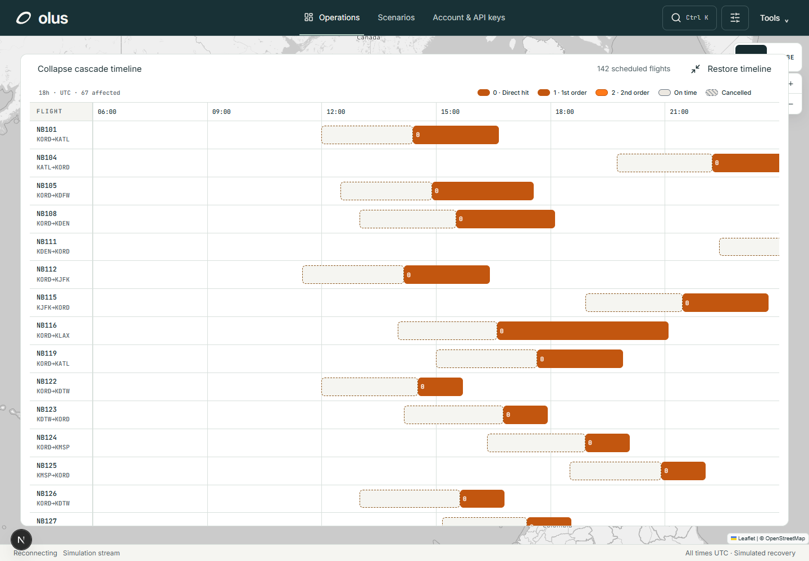

Olus · Panel and metric repairs
Actual browser renders with an isolated local simulation. Resize, expand, form validation and recovery metrics checked.
Measured checks · Validation scope
Disruption editor
Mobile expanded editor
Financial comparison
Cost and risk detail
Mobile financial comparison
Flight inspector
Timeline